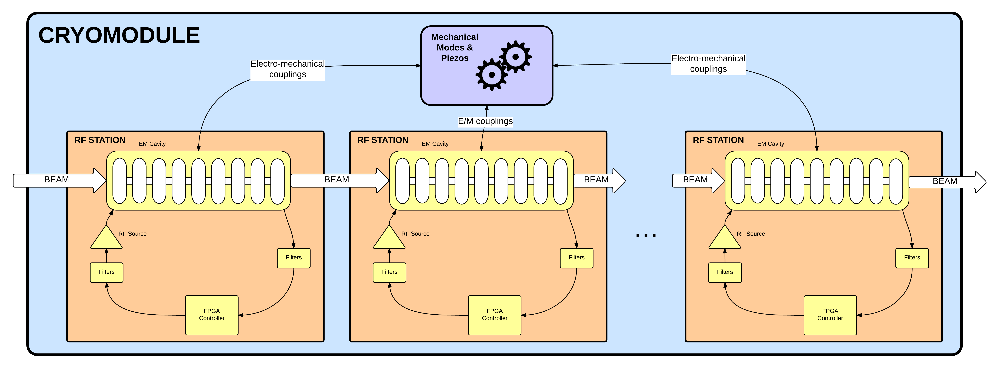
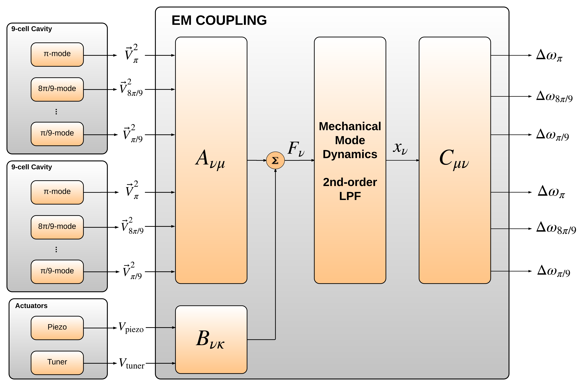

LCLS-II System
Simulations
LLRF
goes
global
Noise Analysis
impractical to perform in the field
Performance
based on many factors
etc.
Requirements
Accuracy
Reflect physics
+
Performance
Produce results fast
LCLS-II System
Simulations
What?
Simulations
“...accurate system simulations are essential in order to conceive, prototype and spec accelerator instrumentation. ” - Smart architect
Tracking
Macro-particle simplified LiTrack simulator
Feedback
Full simulation of feedback systems
Noise
Correlated and uncorrelated
Why?
Commodity
Full accelerator running on your desktop
Flexibility
Change anything and quantify effects on performance
Integration
Evaluate systems interaction
+
Automate optimizations
Simulations are fast
in FPGA potentially faster than physical phenomena.
How?




Tools
C
Computationally efficient back-end
SWIG
Simplified Wrapper and Interface Generator
Python
Configuration and time-series data handling
JavaScript
Front-end
There are even unit tests!
Progress!
Well, how much done and left to do..
Q1 C Back-end (74%)
Q2 Noise & Analysis (34%)
Q3 Configuration & Front-end (40%)
Q4 Documentation (33%)
TOTAL FY15 55%
Features
Back-end
Computationally efficient
Topology
Flexibility to run many kinds of studies
User friendly
Modern user interfaces and configuration schemes
Studies
Noise budgets
What's the effect of LLRF noise on energy errors?
RF System
How fast can the RF recover from a trip?
Beam-based feedback
What would be the benefits of doing BBF 10x faster?
Questions?
LCLS-II LBNL LLRF Team
... and many other people
John Byrd
Paul Emma
Claudio Rivetta
Alejandro Queiruga
Daniel Driver
Quim Llimona
Marvin Muniz
Jack Olivieri
Stefan Paret